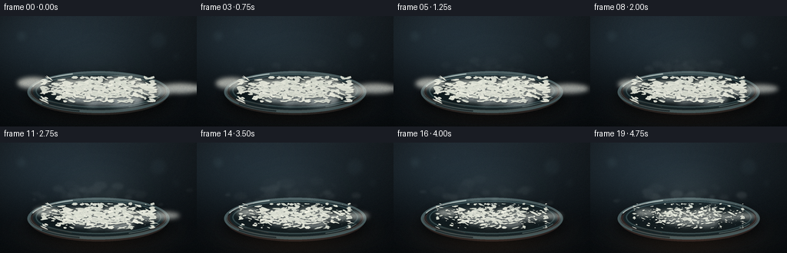
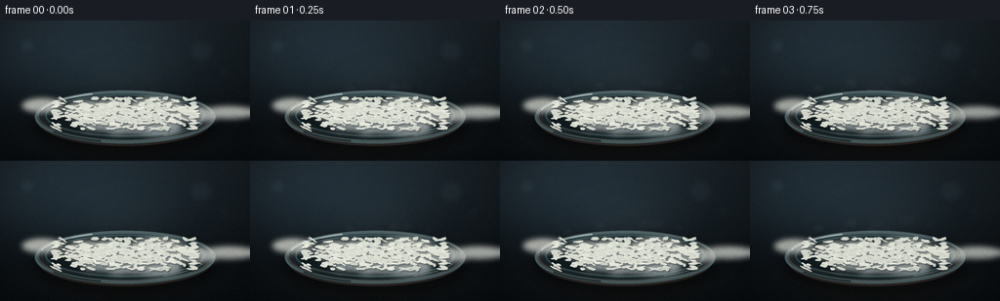

CODING AGENTS AS PIXEL WORLD MODELS
traex/DeepSeek-V4.1-Flash · phygen_117
点击播放 · 原生 RGB 像素
逐轮保存的候选
回放视频、检查图与代码变化。
每份候选均可单独播放。实际图片检查记录在下方工具轨迹中。
候选 01播放与检查图
点击播放 · 原生 RGB 像素


展开代码变化
--- 上一保存版本
+++ 本次保存版本
@@ -0,0 +1,395 @@
+"""Procedural naphthalene sublimation timelapse.
+
+The scene is rendered internally at 4x resolution, then area-downsampled to
+the 256x144 PixelWorld frame size. All motion is deterministic.
+"""
+
+from pathlib import Path
+
+import numpy as np
+from PIL import Image, ImageDraw, ImageFilter
+
+import artifact_io
+
+
+CASE_DIR = Path(__file__).resolve().parent
+W, H, N, FPS = 256, 144, 20, 4.0
+S = 4
+CW, CH = W * S, H * S
+
+
+def smoothstep(value):
+ value = np.clip(value, 0.0, 1.0)
+ return value * value * (3.0 - 2.0 * value)
+
+
+def rgba_layer():
+ return Image.new("RGBA", (CW, CH), (0, 0, 0, 0))
+
+
+def add_glow(image, center, radius, color, strength):
+ """Add a soft radial glow to an RGB uint8 image."""
+ yy, xx = np.mgrid[0:CH, 0:CW]
+ distance = ((xx - center[0]) / radius[0]) ** 2 + ((yy - center[1]) / radius[1]) ** 2
+ falloff = np.exp(-distance * 2.2)
+ rgb = np.asarray(image, dtype=np.float32)
+ rgb += falloff[:, :, None] * np.asarray(color, dtype=np.float32) * strength
+ return Image.fromarray(np.clip(rgb, 0, 255).astype(np.uint8), "RGB")
+
+
+def make_background(frame):
+ yy, xx = np.mgrid[0:CH, 0:CW]
+ yn = yy / (CH - 1)
+ xn = xx / (CW - 1)
+
+ top = np.array([31.0, 39.0, 45.0])
+ bottom = np.array([8.0, 12.0, 15.0])
+ curve = np.power(yn, 0.72)[:, :, None]
+ rgb = top * (1.0 - curve) + bottom * curve
+
+ # Cool reflected studio light from the upper left.
+ light = np.exp(-(((xn - 0.22) / 0.46) ** 2 + ((yn - 0.18) / 0.42) ** 2))
+ rgb += light[:, :, None] * np.array([12.0, 18.0, 22.0])
+
+ # A restrained tabletop plane catches the dish.
+ table = smoothstep((yn - 0.69) / 0.23)
+ rgb = rgb * (1.0 - 0.16 * table[:, :, None])
+ rgb += table[:, :, None] * np.array([5.0, 7.0, 8.0])
+
+ # Vignette keeps attention on the crystals.
+ vignette = 1.0 - 0.42 * (((xn - 0.5) / 0.72) ** 2 + ((yn - 0.48) / 0.76) ** 2)
+ rgb *= np.clip(vignette, 0.50, 1.0)[:, :, None]
+
+ # Very subtle out-of-focus highlights in the empty background.
+ bokeh = rgba_layer()
+ draw = ImageDraw.Draw(bokeh)
+ for x, y, r, alpha in [
+ (112, 104, 34, 20),
+ (212, 78, 19, 17),
+ (824, 126, 48, 15),
+ (916, 210, 24, 12),
+ (164, 260, 16, 9),
+ ]:
+ draw.ellipse((x - r, y - r, x + r, y + r), fill=(115, 154, 162, alpha))
+ bokeh = bokeh.filter(ImageFilter.GaussianBlur(13))
+ base = Image.fromarray(np.clip(rgb, 0, 255).astype(np.uint8), "RGB").convert("RGBA")
+ base.alpha_composite(bokeh)
+ return base
+
+
+def draw_dish(base, progress):
+ # Soft cast shadow.
+ shadow = rgba_layer()
+ shadow_draw = ImageDraw.Draw(shadow)
+ shadow_draw.ellipse((135, 310, 889, 548), fill=(0, 0, 0, 150))
+ shadow = shadow.filter(ImageFilter.GaussianBlur(28))
+ base.alpha_composite(shadow)
+
+ dish = rgba_layer()
+ d = ImageDraw.Draw(dish)
+
+ # Warm exposure leaking up from beneath the glass.
+ warm = int(13 + 20 * progress)
+ d.ellipse((152, 303, 872, 515), fill=(65 + warm, 69, 63, 100))
+ d.ellipse((172, 294, 852, 490), fill=(27, 46, 51, 164))
+ d.ellipse((190, 291, 834, 470), fill=(21, 37, 42, 145))
+
+ # Thick glass rim and inner wall.
+ d.ellipse((142, 287, 882, 505), outline=(104, 132, 135, 155), width=13)
+ d.ellipse((156, 292, 868, 493), outline=(181, 210, 208, 84), width=4)
+ d.ellipse((185, 302, 839, 477), outline=(77, 108, 112, 150), width=7)
+
+ # Long specular strokes make the vessel read as curved glass.
+ d.arc((154, 291, 870, 496), 196, 248, fill=(217, 235, 231, 176), width=7)
+ d.arc((161, 294, 862, 492), 203, 231, fill=(247, 250, 242, 114), width=3)
+ d.arc((171, 300, 851, 485), 20, 62, fill=(157, 192, 191, 108), width=5)
+ d.arc((153, 300, 870, 502), 106, 145, fill=(67, 93, 98, 100), width=8)
+ d.line((232, 440, 372, 470), fill=(196, 218, 214, 55), width=5)
+
+ base.alpha_composite(dish)
+
+
+def build_crystals():
+ rng = np.random.default_rng(1172026)
+ crystals = []
+ for _ in range(430):
+ # Several overlapping distributions form a low, irregular mound.
+ mode = rng.random()
+ if mode < 0.62:
+ x = 512 + rng.normal(0, 176)
+ y = 382 + rng.normal(0, 31)
+ elif mode < 0.88:
+ x = 512 + rng.normal(0, 248)
+ y = 393 + rng.normal(0, 42)
+ else:
+ x = 512 + rng.normal(0, 116)
+ y = 352 + rng.normal(0, 28)
+ x = float(np.clip(x, 230, 794))
+ y = float(np.clip(y, 320, 444))
+
+ angle = rng.uniform(-0.42, 0.42) + (0.25 if rng.random() < 0.25 else 0.0)
+ length = rng.uniform(14, 52) * (1.25 if rng.random() < 0.16 else 1.0)
+ width = rng.uniform(5, 17)
+ vertices = rng.integers(6, 10)
+ angles = np.linspace(0, 2 * np.pi, vertices, endpoint=False)
+ angles += rng.normal(0, 0.10, vertices)
+ radial = rng.uniform(0.70, 1.16, vertices)
+ local = np.column_stack(
+ (np.cos(angles) * length * 0.50 * radial, np.sin(angles) * width * 0.50 * radial)
+ )
+ c, s = np.cos(angle), np.sin(angle)
+ local = np.column_stack((local[:, 0] * c - local[:, 1] * s,
+ local[:, 0] * s + local[:, 1] * c))
+
+ exposure = abs(x - 512) / 282.0 + abs(y - 380) / 130.0
+ fade_start = 3.0 + rng.uniform(0, 8.5) + max(0.0, 1.15 - exposure) * 4.5
+ fade_length = rng.uniform(7.0, 15.0)
+ persistence = rng.random()
+ if persistence < 0.42:
+ end_scale = rng.uniform(0.0, 0.10)
+ elif persistence < 0.77:
+ end_scale = rng.uniform(0.15, 0.34)
+ else:
+ end_scale = rng.uniform(0.42, 0.68)
+
+ warm = rng.uniform(0.0, 1.0)
+ fill = (
+ int(216 + 24 * warm),
+ int(220 + 20 * warm),
+ int(207 + 20 * warm),
+ int(222 + 24 * rng.random()),
+ )
+ crystals.append(
+ {
+ "x": x,
+ "y": y,
+ "poly": local,
+ "start": fade_start,
+ "duration": fade_length,
+ "end_scale": end_scale,
+ "fill": fill,
+ "sparkle": rng.random() < 0.13,
+ "spark_side": -1 if rng.random() < 0.5 else 1,
+ }
+ )
+ crystals.sort(key=lambda item: item["y"])
+ return crystals
+
+
+CRYSTALS = build_crystals()
+
+
+def crystal_scale(crystal, frame):
+ t = smoothstep((frame - crystal["start"]) / crystal["duration"])
+ return 1.0 - t * (1.0 - crystal["end_scale"])
+
+
+def draw_mound(base, frame, progress):
+ # Cloudy underlayer fills the gaps between individual shards.
+ mound_mask = Image.new("L", (CW, CH), 0)
+ md = ImageDraw.Draw(mound_mask)
+ scale = 1.0 - 0.34 * smoothstep(progress)
+ y_scale = 1.0 - 0.43 * smoothstep(progress)
+ rng = np.random.default_rng(9201)
+ for _ in range(34):
+ x = 512 + rng.normal(0, 170)
+ y = 388 + rng.normal(0, 25)
+ rx = rng.uniform(54, 124)
+ ry = rng.uniform(18, 42)
+ x = 512 + (x - 512) * scale
+ y = 390 + (y - 390) * y_scale
+ rx *= scale
+ ry *= y_scale
+ md.ellipse((x - rx, y - ry, x + rx, y + ry), fill=255)
+ mound_mask = mound_mask.filter(ImageFilter.GaussianBlur(11))
+ mask = np.asarray(mound_mask, dtype=np.float32) / 255.0
+
+ yy, xx = np.mgrid[0:CH, 0:CW]
+ texture_rng = np.random.default_rng(77)
+ noise = texture_rng.normal(0, 10.0, (CH // 4, CW // 4)).astype(np.float32)
+ noise = np.asarray(
+ Image.fromarray(np.clip(noise + 128, 0, 255).astype(np.uint8), "L").resize(
+ (CW, CH), Image.Resampling.BICUBIC
+ ),
+ dtype=np.float32,
+ ) - 128
+ shade = np.clip((yy - 320) / 145.0, 0, 1)
+ mound = np.zeros((CH, CW, 3), dtype=np.float32)
+ mound[:, :, 0] = 232 - 67 * shade + noise * 0.55
+ mound[:, :, 1] = 231 - 57 * shade + noise * 0.42
+ mound[:, :, 2] = 218 - 42 * shade + noise * 0.28
+
+ alpha = (mask * (195 - 45 * progress)).astype(np.uint8)
+ layer = Image.fromarray(np.clip(mound, 0, 255).astype(np.uint8), "RGB").convert("RGBA")
+ layer.putalpha(Image.fromarray(alpha, "L"))
+ base.alpha_composite(layer)
+
+
+def draw_crystals(base, frame):
+ shadows = rgba_layer()
+ shards = rgba_layer()
+ sd = ImageDraw.Draw(shadows)
+ rd = ImageDraw.Draw(shards)
+
+ for crystal in CRYSTALS:
+ scale = crystal_scale(crystal, frame)
+ if scale < 0.025:
+ continue
+ cx, cy = crystal["x"], crystal["y"]
+ points = crystal["poly"] * scale + np.array([cx, cy])
+ pts = [tuple(point) for point in points]
+ shadow_pts = [tuple(point + np.array([4.5, 5.5])) for point in points]
+ sd.polygon(shadow_pts, fill=(25, 33, 37, 86))
+ rd.polygon(pts, fill=crystal["fill"])
+
+ # One narrow facet catches the cool studio light.
+ p0 = np.asarray(pts[0])
+ p1 = np.asarray(pts[1])
+ mid = p0 * 0.52 + p1 * 0.48
+ toward_center = np.array([cx, cy]) - mid
+ norm = np.linalg.norm(toward_center)
+ if norm > 1:
+ toward_center /= norm
+ a = mid + toward_center * 1.5
+ b = p0 * 0.22 + p1 * 0.22 + mid * 0.56 + toward_center * 2.0
+ rd.line((tuple(a), tuple(b)), fill=(255, 255, 249, 178), width=max(1, int(2.2 * scale)))
+
+ if crystal["sparkle"] and scale > 0.45:
+ sx = cx + crystal["spark_side"] * 3.0
+ sy = cy - 4.0
+ rd.line((sx - 5, sy, sx + 5, sy), fill=(255, 255, 250, 130), width=1)
+ rd.line((sx, sy - 4, sx, sy + 4), fill=(255, 255, 250, 95), width=1)
+
+ shadows = shadows.filter(ImageFilter.GaussianBlur(2.1))
+ base.alpha_composite(shadows)
+ base.alpha_composite(shards)
+
+
+def build_vapor_particles():
+ rng = np.random.default_rng(461)
+ particles = []
+ for _ in range(105):
+ particles.append(
+ {
+ "x": 512 + rng.normal(0, 150),
+ "y": 350 + rng.normal(0, 15),
+ "birth": rng.uniform(-4.0, 17.0),
+ "life": rng.uniform(7.0, 15.0),
+ "drift": rng.normal(0, 28),
+ "sway": rng.uniform(8, 26),
+ "phase": rng.uniform(0, 2 * np.pi),
+ "size": rng.uniform(8, 24),
+ "alpha": rng.uniform(10, 27),
+ }
+ )
+ return particles
+
+
+VAPOR = build_vapor_particles()
+
+
+def draw_vapor(base, frame, progress):
+ vapor = rgba_layer()
+ vd = ImageDraw.Draw(vapor)
+ intensity = 0.30 + 0.70 * smoothstep(progress)
+
+ # Structured rising puffs carry most of the motion.
+ for particle in VAPOR:
+ age = (frame - particle["birth"]) / particle["life"]
+ if age <= 0.0 or age >= 1.0:
+ continue
+ visible = np.sin(np.pi * age) ** 0.72
+ x = (
+ particle["x"]
+ + particle["drift"] * age
+ + particle["sway"] * np.sin(age * 4.3 + particle["phase"])
+ )
+ y = particle["y"] - age * (82 + particle["size"] * 2.4)
+ radius = particle["size"] * (0.55 + 1.35 * age)
+ alpha = int(particle["alpha"] * visible * intensity)
+ if alpha <= 0:
+ continue
+ vd.ellipse(
+ (x - radius, y - radius * 0.60, x + radius, y + radius * 0.60),
+ fill=(218, 231, 229, alpha),
+ )
+
+ # A broad low-contrast plume adds volume without obscuring the crystals.
+ rng = np.random.default_rng(120 + frame)
+ low = rng.normal(0, 1, (36, 64)).astype(np.float32)
+ low = np.asarray(
+ Image.fromarray(np.clip(low * 42 + 128, 0, 255).astype(np.uint8), "L").filter(
+ ImageFilter.GaussianBlur(7)
+ ).resize((CW, CH), Image.Resampling.BICUBIC),
+ dtype=np.float32,
+ )
+ plume = np.clip((low - 116) / 38.0, 0, 1)
+ yy, xx = np.mgrid[0:CH, 0:CW]
+ envelope = np.exp(
+ -(((xx - 512 - 16 * np.sin(progress * 4)) / 210) ** 2 + ((yy - 255) / 120) ** 2)
+ )
+ envelope *= smoothstep((440 - yy) / 160.0)
+ plume_alpha = (plume * envelope * (24 + 30 * progress)).astype(np.uint8)
+ plume_img = Image.new("RGBA", (CW, CH), (205, 223, 220, 0))
+ plume_img.putalpha(Image.fromarray(plume_alpha, "L"))
+ vapor.alpha_composite(plume_img)
+
+ vapor = vapor.filter(ImageFilter.GaussianBlur(5.5))
+ base.alpha_composite(vapor)
+
+
+def add_warm_floor(base, progress):
+ glow = add_glow(
+ base.convert("RGB"),
+ (512, 466),
+ (420, 132),
+ (89, 50, 22),
+ 0.16 + 0.22 * smoothstep(progress),
+ )
+ base.paste(glow.convert("RGBA"), (0, 0))
+
+
+def finish_frame(base, frame, progress):
+ rgb = np.asarray(base.convert("RGB"), dtype=np.float32)
+ yy, xx = np.mgrid[0:CH, 0:CW]
+
+ # Gentle exposure and a fine filmic grain suggest a captured timelapse.
+ exposure = 1.0 + 0.012 * np.sin(frame * 1.37) + 0.014 * progress
+ rgb *= exposure
+ grain_rng = np.random.default_rng(8000 + frame)
+ grain = grain_rng.normal(0, 3.2, (CH, CW, 1)).astype(np.float32)
+ rgb += grain
+
+ # Slight cool haze in the upper corners and a warm lower reflection.
+ haze = np.exp(-(((xx - 512) / 470) ** 2 + ((yy - 170) / 210) ** 2))
+ rgb += haze[:, :, None] * np.array([2.5, 4.5, 5.0])
+ reflection = smoothstep((yy - 450) / 120.0) * np.exp(-((xx - 512) / 360.0) ** 2)
+ rgb += reflection[:, :, None] * np.array([7.0, 4.0, 2.0]) * progress
+
+ final = np.clip(rgb, 0, 255).astype(np.uint8)
+ small = Image.fromarray(final, "RGB").resize((W, H), Image.Resampling.LANCZOS)
+ return np.asarray(small, dtype=np.uint8)
+
+
+def render():
+ frames = []
+ for frame in range(N):
+ progress = frame / (N - 1)
+ base = make_background(frame)
+ add_warm_floor(base, progress)
+ draw_dish(base, progress)
+ draw_mound(base, frame, progress)
+ draw_crystals(base, frame)
+ draw_vapor(base, frame, progress)
+ frames.append(finish_frame(base, frame, progress))
+ return np.stack(frames)
+
+
+def main():
+ frames = render()
+ artifact_io.save(frames, CASE_DIR)
+ print(f"saved {len(frames)} frames to {CASE_DIR}")
+
+
+if __name__ == "__main__":
+ main()
候选 02播放与检查图
点击播放 · 原生 RGB 像素

展开代码变化
--- 上一保存版本
+++ 本次保存版本
@@ -34,7 +34,7 @@
falloff = np.exp(-distance * 2.2)
rgb = np.asarray(image, dtype=np.float32)
rgb += falloff[:, :, None] * np.asarray(color, dtype=np.float32) * strength
- return Image.fromarray(np.clip(rgb, 0, 255).astype(np.uint8), "RGB")
+ return Image.fromarray(np.clip(rgb, 0, 255).astype(np.uint8))
def make_background(frame):
@@ -72,7 +72,7 @@
]:
draw.ellipse((x - r, y - r, x + r, y + r), fill=(115, 154, 162, alpha))
bokeh = bokeh.filter(ImageFilter.GaussianBlur(13))
- base = Image.fromarray(np.clip(rgb, 0, 255).astype(np.uint8), "RGB").convert("RGBA")
+ base = Image.fromarray(np.clip(rgb, 0, 255).astype(np.uint8)).convert("RGBA")
base.alpha_composite(bokeh)
return base
@@ -208,7 +208,7 @@
texture_rng = np.random.default_rng(77)
noise = texture_rng.normal(0, 10.0, (CH // 4, CW // 4)).astype(np.float32)
noise = np.asarray(
- Image.fromarray(np.clip(noise + 128, 0, 255).astype(np.uint8), "L").resize(
+ Image.fromarray(np.clip(noise + 128, 0, 255).astype(np.uint8)).resize(
(CW, CH), Image.Resampling.BICUBIC
),
dtype=np.float32,
@@ -220,8 +220,8 @@
mound[:, :, 2] = 218 - 42 * shade + noise * 0.28
alpha = (mask * (195 - 45 * progress)).astype(np.uint8)
- layer = Image.fromarray(np.clip(mound, 0, 255).astype(np.uint8), "RGB").convert("RGBA")
- layer.putalpha(Image.fromarray(alpha, "L"))
+ layer = Image.fromarray(np.clip(mound, 0, 255).astype(np.uint8)).convert("RGBA")
+ layer.putalpha(Image.fromarray(alpha))
base.alpha_composite(layer)
@@ -318,7 +318,7 @@
rng = np.random.default_rng(120 + frame)
low = rng.normal(0, 1, (36, 64)).astype(np.float32)
low = np.asarray(
- Image.fromarray(np.clip(low * 42 + 128, 0, 255).astype(np.uint8), "L").filter(
+ Image.fromarray(np.clip(low * 42 + 128, 0, 255).astype(np.uint8)).filter(
ImageFilter.GaussianBlur(7)
).resize((CW, CH), Image.Resampling.BICUBIC),
dtype=np.float32,
@@ -331,7 +331,7 @@
envelope *= smoothstep((440 - yy) / 160.0)
plume_alpha = (plume * envelope * (24 + 30 * progress)).astype(np.uint8)
plume_img = Image.new("RGBA", (CW, CH), (205, 223, 220, 0))
- plume_img.putalpha(Image.fromarray(plume_alpha, "L"))
+ plume_img.putalpha(Image.fromarray(plume_alpha))
vapor.alpha_composite(plume_img)
vapor = vapor.filter(ImageFilter.GaussianBlur(5.5))
@@ -367,7 +367,7 @@
rgb += reflection[:, :, None] * np.array([7.0, 4.0, 2.0]) * progress
final = np.clip(rgb, 0, 255).astype(np.uint8)
- small = Image.fromarray(final, "RGB").resize((W, H), Image.Resampling.LANCZOS)
+ small = Image.fromarray(final).resize((W, H), Image.Resampling.LANCZOS)
return np.asarray(small, dtype=np.uint8)
可观测工具轨迹
实际执行的命令与返回图片。
命令 1exit 0
/bin/bash -c "pwd && rg --files -g 'prompt.txt' -g 'GENERATION_RULES.md' -g 'task_spec.json' -g '"'!node_modules'"'"
命令 2exit 0
/bin/bash -c 'ls -la'
命令 3exit 0
/bin/bash -c 'git status --short --branch'
命令 4exit 0
/bin/bash -c 'cat prompt.txt'
命令 5exit 0
/bin/bash -c 'cat GENERATION_RULES.md'
命令 6exit 0
/bin/bash -c 'cat task_spec.json'
命令 7exit 0
/bin/bash -c "sed -n '1,260p' artifact_io.py"
命令 8exit 0
/bin/bash -c "sed -n '1,260p' player_template.html"
命令 9exit 0
/bin/bash -c 'python generate.py'
命令 10exit 0
/bin/bash -c 'ls -lh frames inspection.png transition_check.png pixels.npz index.html'
命令 11exit 0
/bin/bash -c 'command -v chafa || command -v viu || command -v jp2 || command -v img2txt || true'
命令 12exit 0
/bin/bash -c "python - <<'PY'
from PIL import Image
import numpy as np
from pathlib import Path
for i in [0,4,9,14,19]:
a=np.asarray(Image.open(f'frames/{i:02d}.png'))
print(i, 'mean', a.mean((0,1)).round(1), 'std', a.std((0,1)).round(1), 'bright>210', ((a.mean(2)>210).mean()*100).round(2), 'dark<35', ((a.mean(2)<35).mean()*100).round(2))
prev=None
for i in range(20):
a=np.asarray(Image.open(f'frames/{i:02d}.png')).astype(float)
if prev is not None: print('delta',i, np.abs(a-prev).mean().round(3), 'changed%',(np.abs(a-prev).max(2)>3).mean().round(3)*100)
prev=a
PY"命令 13exit 0
/bin/bash -c "python - <<'PY'
from PIL import Image
im=Image.open('inspection.png')
print(im.size)
# Print luminance ASCII for first and last frames at 64x36 to inspect composition.
chars=' .:-=+*#%@'
for idx in [0,19]:
a=Image.open(f'frames/{idx:02d}.png').convert('L').resize((64,36))
print('\\nFRAME',idx)
for row in range(36):
print(''.join(chars[v*len(chars)//256] for v in list(a.crop((0,row,64,row+1)).getdata())))
PY"命令 14exit 0
/bin/bash -c "python - <<'PY'
from PIL import Image
# Build a larger inspection strip for visual verification.
ims=[Image.open(f'frames/{i:02d}.png') for i in [0,4,9,14,19]]
out=Image.new('RGB',(256*5,144),(20,24,30))
for j,im in enumerate(ims): out.paste(im,(j*256,0))
out.resize((1280,144),Image.Resampling.NEAREST).save('review_strip.png')
PY"命令 15exit 0
/bin/bash -c 'python generate.py'
命令 16exit 1
/bin/bash -c 'command -v node; command -v chromium; command -v google-chrome; command -v playwright; command -v ffmpeg'
命令 17exit 0
/bin/bash -c 'git status --short -- .'
命令 18exit 0
/bin/bash -c "python - <<'PY'
from pathlib import Path
import numpy as np
from PIL import Image
frames=sorted(Path('frames').glob('*.png'))
assert len(frames)==20
arr=[]
for p in frames:
im=Image.open(p)
assert im.size==(256,144) and im.mode=='RGB', (p, im.size, im.mode)
arr.append(np.asarray(im))
arr=np.stack(arr)
assert arr.shape==(20,144,256,3) and arr.dtype==np.uint8
z=np.load('pixels.npz')
assert z['pixels'].shape==(144,256,20)
print('frames',arr.shape,'npz',z['pixels'].shape,'unique',len(np.unique(arr.reshape(20,-1),axis=1)))
print('sizes',Path('index.html').stat().st_size,Path('pixels.npz').stat().st_size)
PY"命令 19exit 0
/bin/bash -c 'unlink review_strip.png'
命令 20exit 0
/bin/bash -c 'ls -lh generate.py index.html inspection.png transition_check.png pixels.npz'
保存候选 2 份；完成命令 20 次；可验证图片返回 0 张。原始 API 响应与完整日志保留在本地。